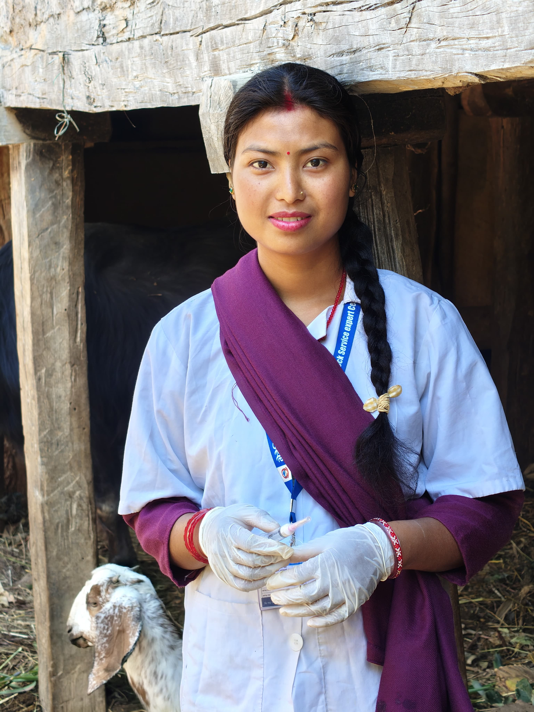

01
Animal vaccination
Safe, correct vaccine administration and guidance on preventive care to help protect livestock from disease.
ANIMAL HEALTH · FARMER EDUCATION
Veterinary Technician / Vaccinator / Instructor
Caring for animals.
Supporting the people who raise them.
Practical animal healthcare, safe vaccination and hands-on guidance for farming communities in Arghakhanchi, Nepal.

01 — ABOUT ME
I’m Mina, a veterinary technician, animal health student and vaccinator based in Sandhikharka, Arghakhanchi. I work with animals and the people who care for them, combining practical experience with a commitment to learning.
As an instructor, I teach safe vaccination techniques and practical animal health skills. I believe that sharing knowledge with farmers and learners is an essential part of protecting animal welfare and preventing disease.
02 — HOW I CAN HELP
Practical animal health services and guidance for livestock owners and farming communities.
Safe, correct vaccine administration and guidance on preventive care to help protect livestock from disease.
Health assessments, physical examinations and practical treatment support, with attention to each animal’s condition.
Castration of bucks, pigs and bulls, along with suturing and surgical care support, based on assessment and appropriate veterinary guidance.
Wound management and careful animal restraint and handling to support treatment, comfort and recovery.
Disease prevention and farm management guidance for dairy, poultry, goat and pig farms.
Hands-on demonstrations, farmer meetings and awareness sessions on vaccination, animal health and everyday care.
03 — EXPERIENCE & SKILLS
Five years of vaccination experience, supporting animal health and working closely with rural farming communities.
Veterinary Hospital and Animal Service Science Center
04 — EDUCATION & TRAINING
Agroforestry Polytechnic Institute
DIPLOMA EXAMINATION · 2025 A.D.
Arghakhanchi Technical Training School Pvt. Ltd.
18-MONTH PROGRAM · 2077 B.S.
Additional qualification in computer studies.
Completed training in community livestock promotion.
05 — GET IN TOUCH
For animal care, vaccination, farmer training or professional collaboration, reach out by email or WhatsApp.
Sandhikharka-02, Arghakhanchi, Nepal
A conversation is a good place to start.
Scan the QR code with WhatsApp.
Open WhatsAppOn your phone? Tap the button above.